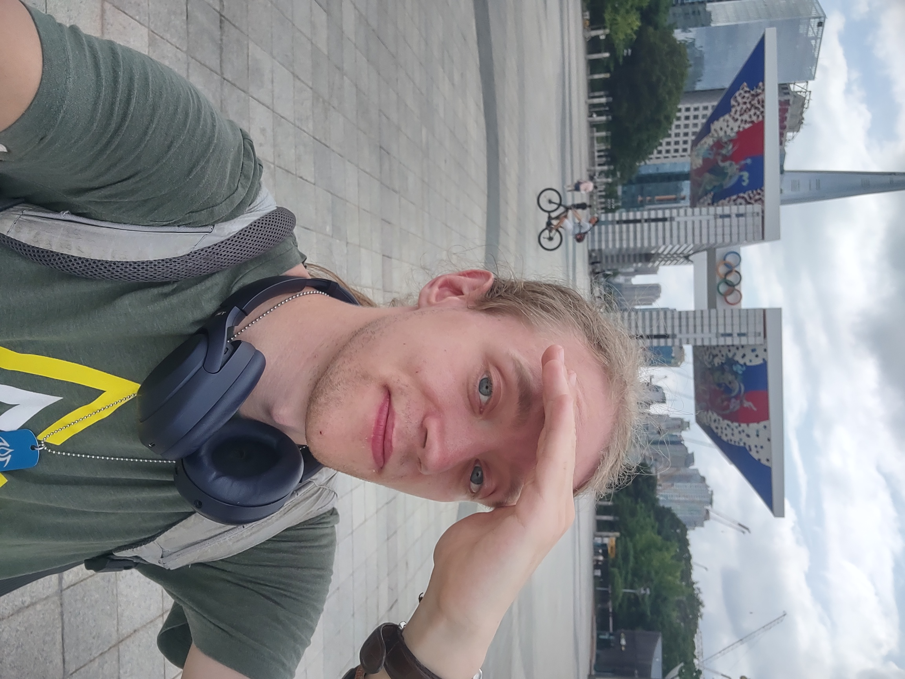

About me

Hello there! My name is Stijn Bekker, currently a student at Leiden University's MA
Book and Digital Media Studies. However, while still in the Faculty of Humanities, my BA
was in a rather different field: International Studies (BAIS). Click
here
to open my BA programme's website. Being fully English-taught,
BAIS allowed me to hone my English skills. But perhaps more interestingly, the programme
also had/has students learn a foreign language completely from scratch! In my case, that was
Japanese. This means that I have (some sort of) control over the following languages
- Dutch - My mother tongue.
- English - My second language; CEFR ± C1/C2.
- Japanese - It having been a few years since my last classes, my Japanese has largely
sunk away. However, the groundwork is still there. I'm confident I could pick it back up
and have a relatively easy time.
- (German - 6 years of German in secondary school has left some marks. I can hear and
read the language well enough to get the gist of it, but my speaking and writing skills have
pretty much completely disappeared.
Shhh, tell nobody I have dual Dutch-German
citizenship.)
Skills and expectations:
| Prior Knowledge | Text formatting tags used on forums back in
the day, like < b > or < i >. So I'm mostly a complete novice. |
| Expectations | I hope to acquire basic knowledge of various coding and
programming knowledge (especially to gain familiarity of markup of text with XML), but mostly
I'm looking forward to working with databases. |
A short list of my hobbies, in no particular order:
- Reading. Books of a variety of genres and types, be it a traditional book, manga, or
visual novels. Actually, I wrote
my BA thesis about a visual novel! Note: closed access, title and tags only.
But do feel free to send me a message and request a copy of the PDF file! Some favourites
include Thea Beckman, Terry Pratchett, Assassination Classroom, and VA11 Hall-A. In general
I'd say my favourite genres are historical fiction and fantasy, but even though it still has to be
explored, as VA11 Hall-A shows, I do have somewhat of an interest in sci-fi. (Please read/play
VA11 Hall-A, it is so good!)
- Videogames. I could be here for hours talking about all the things I've played, liked, loved,
probably spent too much time thinking about, etc., but I'm gonna try to keep it short. Last
August I got way into Final Fantasy XIV and I'm still making my way through the expansions to
try and be caught up before Dawnbreakers releases; and I've finally started the Great Ace
Attorney Chronicles, a courtroom drama in which you play as a defence lawyer investigating
murder cases and battling it out with a prosecution to uncover who really did it. My top 3
is Fire Emblem Awakening (turn-based jRPG), 999/Virtue's Last Reward (the first two parts of
the Zero Escape trilogy, visual novels with lots of escape room puzzles), and Valkyria
Chronicles (a whole heap of genres and ideas).
- Travelling. Due to time and budget constraints I can't travel as much or as long as I'd like.
I've gone as far as Japan and as nearby as Belgium, but my two most recent trips were to
Seoul in South Korea and Assisi in Italy. Seoul was more of a city trip, though I did also do an
amazing mountain hike, whereas Assisi is very much a small village somewhere in the Italian
mountains. My next two leisure travel destinations are Glasgow and hopefully Paris. The latter
depends on if my application for Olympic volunteering gets accepted or not, but I'll hear from
the organisation within the next 3 months or so.
- Cooking. I don't do it often since it takes lots of time and energy and it's just not that much fun
to cook alone and for myself, but I do like doing it. Especially Chinese food is a blast not just to eat, but also to make!
Mapo tofu is by far my favourite dish to cook.